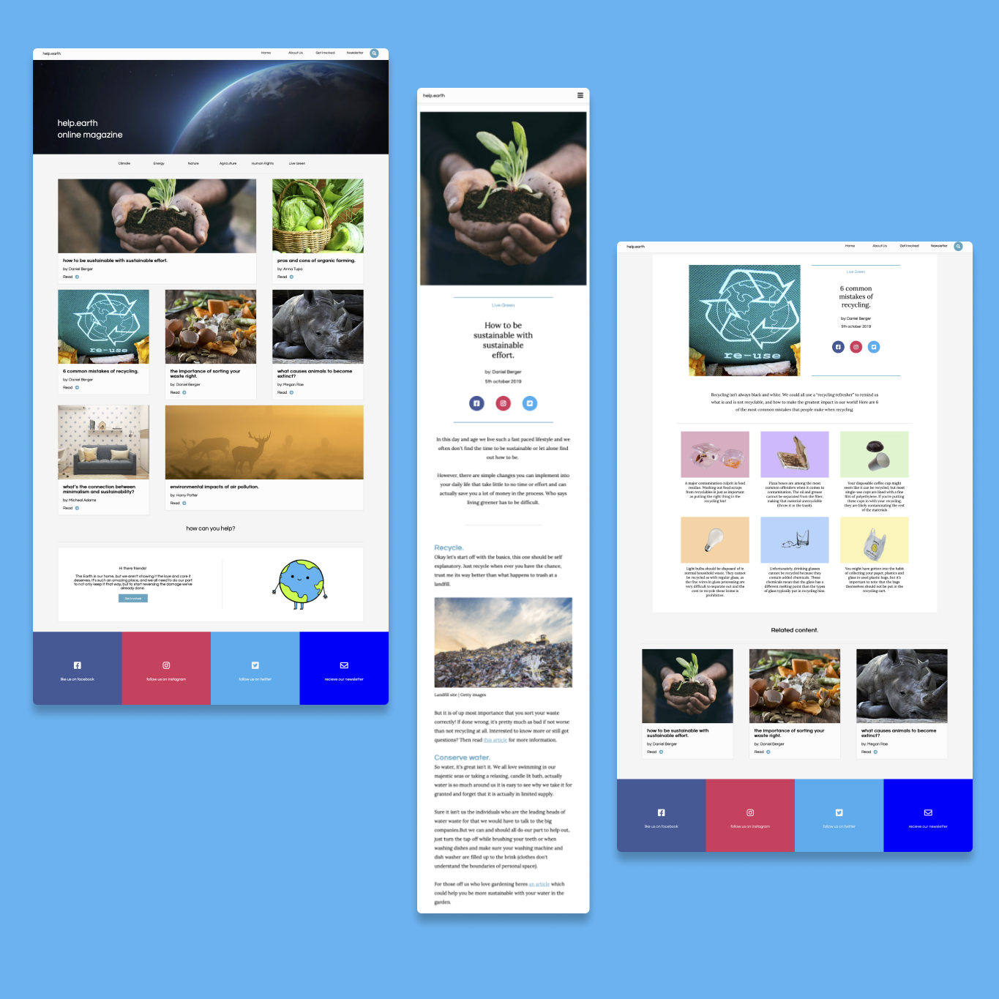

help.earth
Solo Project, Website Development
Coding
Concept Creation
Content Creation
UX Design
UI Design
Visual Studio Code

HTML
CSS

Adobe Xd
For this project we were tasked with creating an online magazine for a topic of our choice, focusing on using research to create relevant and valuable content for the readers.
Intro
HELP.US HELP.EARTH
I chose to do an online magazine on the topic of green living and focused my research on the main issues people regarding as both important and in which they felt they were lacking knowledge. Through my research it was clear that the most common information people yearned for had to do with recycling.

Creating the visual identity
DESIGNING FOR THE WORLD
For the design I wanted it to represent the inherit style of the online magazine, using colors such as blue and green and a lot of white space to give it a clean organic feeling. I went further to include a few animations as well as some colorful and unique elements, such as the waving earth and the footer design.
Take Aways
MY FIRST SOLO PROJECT
This was my first solo project and I can say I am extremely happy with the outcome. I enjoyed copywriting and designing the content of the articles which was a whole new area for me and going into different types of media and using them creating a unique yet simple design, with the simple use of hover effects to bring the page alive.
Similar projects